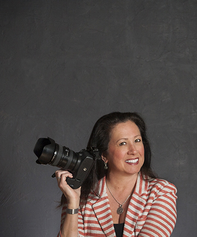

Fine Art Photography
by Barbara Chase
Spokane, Washington
509.710.3738

Contact
509.710.3738
fineartbybarb@yahoo.com
4709 S. Glenrose Road
Spokane, Wa 99223
About Me
I was blessed with an artistic and creative passion. I was introduced to the world of photography when I bought a camera in XXXX and began developing film in my basement. What started as a hobby became a life long adventure.
Photography isn't just a career choice, it helped me conqure one of the greatest feats of my life. I was diagnosed with ______ cancer in XXXX and beat beat it in XXXX. I feel at peace when i'm behind my camera becuase photography is the only thing that is always in the moment.
I want to give my clients amazing images that capture the spirit and playfulness of their loved ones in the way they're seen everyday.